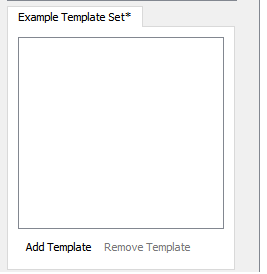
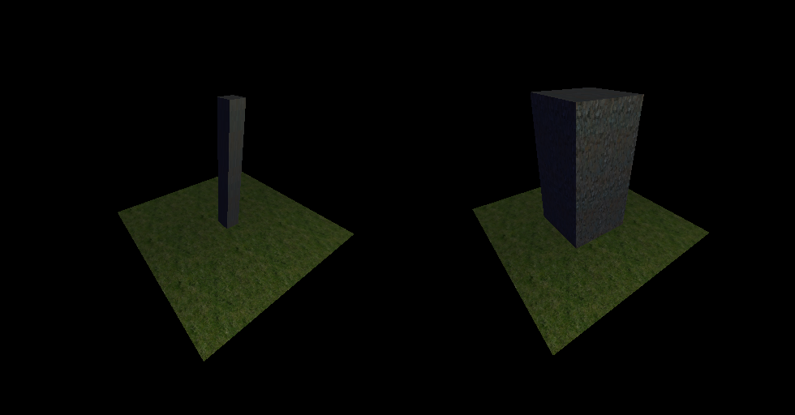
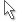
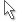

Walls and Holes User Manual¶
Introduction¶
Walls and Holes is a 2D to 3D map editor which lets you develop maps for your games. The primary feature is converting a 2D tile map into a useable 3D mesh. Walls and Holes focuses on speed and ease of use.
Getting Started¶
Creating a New Map¶
When first opening the program you are greeted by the following window:

Main Window of the appilcation
To create a new map go to: File→New Map Ctrl + N

Creating a new map
The New Map dialog looks like this:

New Map Dialog
Here we choose the initial size of the map, whether it’s indoors or outdoors, and whether if the map will have a ceiling or not. After creating the new map you will see a grid of empty sqaures, and now you can draw on the map using the Wall template.

Map is created
The Tile Template System¶
Overview¶
The tile template system is for users to define different tiles which can output differing meshes.
Creating New Tile Template Sets¶
Tile templates will be stored in tile template sets. To create a new Tile Template set press the  button in the bottom left-hand corner of the screen, then you will be greeted by the following prompt:
button in the bottom left-hand corner of the screen, then you will be greeted by the following prompt:
New Tile Template Set Prompt
Enter the desired file directory which the Tile Template Set will be saved, it is recommended that you save the Tile Template Set and the map files in the same directory.
Once that is done, a new window will pop up on the left-hand side of the screen in the Tile Set View
Press the Add Template button and this will appear in the side toolbar:
- You can modify the following properties of a tile:
- Height: Height of the tile
- Thickness: How small or large the tile will be (max: 1.00)
- X Position: The X position within the grid of the mesh
- Y Position: The Y position within the grid of the mesh
- Material: The material which the tile will use
Example of changing the thickness
Left: Tile thickness of .25
Right: Tile thickness of 1.00
Tools¶
Tile Map Tools¶
- Brush Tool

B - The Brush tool is the main tool which is used. Its radius can be adjusted using the spin box when the tool is selected.
- Brush Tool
- Fill Tool

F - The Fill tool is fills in an empty region
- Fill Tool
- Line Tool

L - The Line tool creates a line, click and drag to use
- Line Tool
- Rect Tool

R - The Rect tool is used to draw rectangles, click and drag to use
- Rect Tool
- Ellipse Tool

E - The ellipse tool draws ellipses, click and drag to use
- Ellipse Tool
- Selection Tool 
S - The selection tool is used to select tiles.
- Single click to select one tile
- Shift-Click to select multiple tiles
- Double click to select tiles with same tile template which are touching
- Triple click to select all of one tile template
- Selection Tool 
{kind=link}
Keyboard Shortcuts¶
Ctrl + Mousewheel- Zoom in/out of the Tile MapCtrl + N- Create a new mapCtrl + S- Save the mapCtrl + Shift + S- Save the mapCtrl + O- Load an existing mapCtrl + W- Close the mapCtrl + E- Export the map meshB- Activate the brush toolF- Activate the fill toolL- Activate the line toolR- Activate the rect toolE- Activate the ellipse toolS- Activate the selection tool